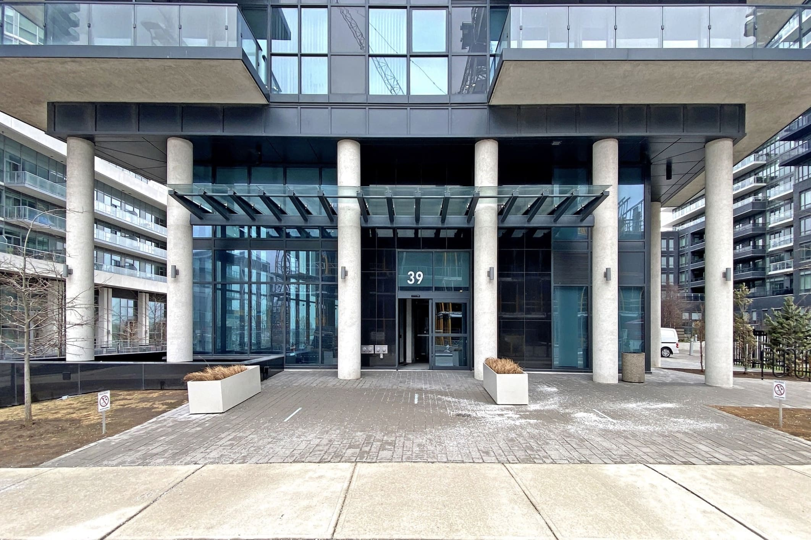

Humber Bay
Cove at Waterways at 39 Annie Craig Dr is a newer, lower-rise Conservatory Group option closer to the water: boutique scale with contemporary amenities in the Annie Craig corridor.
Building contacts
Numbers can change. Confirm with the building or Josh before you rely on them.

Cove at Waterways · 39 Annie Craig Dr
Cove targets buyers who want newer construction and a less vertical profile than the tallest Annie Craig towers, while staying in the same waterfront amenity ecosystem.
Lower-rise form can mean a different lobby feel and resident mix. Concierge and amenities still cover the essentials for turnkey lakeside living.
Tour against Lago, Ocean Club, and Water’s Edge for height, fees, views, and outdoor space, small differences in floor plate and exposure matter here.
Modern layouts with an emphasis on light and outdoor living. Confirm parking ratios and fee inclusions early in the search.
Cove at Waterways at 39 Annie Craig Dr sits in Humber Bay, one of South Etobicoke’s most watched waterfront condo pockets. Humber Bay Shores sits on Lake Ontario between the Humber River and Mimico Creek. It is a waterfront pocket with trail access, parkland, and a short drive downtown. Condos here trade on lake views, newer amenity programming, and day-to-day convenience along Lake Shore and Marine Parade.
Nearby parks: Humber Bay Shores Park, Palace Pier Park and Humber Bay Park East.
Residents use the waterfront trail for walking, running, and cycling, with Humber Bay Park East/West, Palace Pier Park, and shoreline lookouts minutes from most towers. Marinas, green space, and open lake views are part of the everyday rhythm, not just weekend destinations.
Cafés, casual restaurants, and grocery options cluster along Lake Shore Blvd W and the Marine Parade strip, with more choice toward Mimico Village. Errands are doable on foot in many buildings, while the Gardiner and streetcar keep downtown and midtown reachable without living in the core.
Nearby schools
Public
Catholic
HoodQ Mimico–Humber Bay Shores neighbourhood guideSchools, transit, and local context for this pocket.
39 Annie Craig Drive Toronto, Ontario, M8V 0H1
Commute to Downtown Toronto
Somewhat Walkable
Some errands can be accomplished on foot.
Good Transit
Many nearby public transportation options.
Very Bikeable
Biking is convenient for most trips.
Scores by Walk Score®
Josh can pull live inventory, fee schedules, and recent comps for Cove at Waterways.